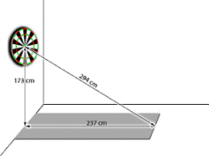
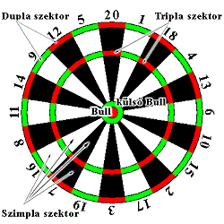

A darts történeteA darts szabályai |
A darts játék szabályaiA darts angol eredetű játék és sportág, melynek során apró nyilakkal dobnak egy kör alakú céltábla különböző pontértékű szektoraira. Általában pubokban és kocsmákban játsszák a világ minden részén, de a legnagyobb versenyek és szervezetek az Egyesült Királyságban, az Amerikai Egyesült Államokban, Hollandiában és a skandináv országokban működnek.A dartsban két szakágat különböztetnek meg, a tábla és a nyilak anyagától függően. Steel dartsnak nevezik azt a játékot, amikor fémhegyű (steel=acél) nyíllal szizál (vagy ritkábban egyéb anyagú) táblára dobnak, soft dartsnak pedig azt, amikor a játékosok automata gépekre játszanak műanyag hegyű nyilakkal. Az alábbi szabályok érvényesek általában a darts sportágban, ám a különböző versenyek kiírásaiban ezek változhatnak, illetve egyéb szabályokkal egészülnek ki. A tábla elhelyezéseA darts tábla húsz szektorra van felosztva, és ezek a szektorok egy bizonsos sorrendben fel vannak számozva egytől húszig, amint az alanti kép mutatja. A szektorok legkülső részén található külső gyűrű a duplázó gyűrű, a körülbelül a szektorok derekánál található gyűrű a triplázó.A tábla közepén található két kisebb kör a külső bull és a bull. A táblától 237 cm-re kell állnia a dobónak. A tábla középpontjának magassága a talajtól mérve 173 cm (egy hat láb, vagy 183 cm magas ember szemmagassága). Dobásnál mindkét lábnak a dobóvonal mögött kell lennie. Az eldobott nyilat akkor sem lehet újra eldobni, ha az nem érte a táblát. Az elejtett nyílért a dobóvonalon belülre is be lehet lépni. SzámolásSteel játékban csak a táblából a játékos által kivett nyilak pontértéke számít.Soft játéknál 'amit a gép megad' elv érvényesül. /A Magyar Darts Szövetség szabályzata alapján ez alól kivételt képez a kiszálló szektorra dobott utolsó nyíl. Abban az esetben ha az bent áll a táblában, de a gép mégis tévesen számolta./ Játék fajták
Pontozás A versenyzők felváltva dobnak körönként 3-3 nyilat. Csak annak a dobásnak van értéke, amikor a dart beleáll, és benne marad a táblában. A dobás értékét a nyíl által eltalált szektor száma adja meg. Ha azonban a szektoron belül a dupla vagy a tripla gyűrűbe áll a dart, akkor a szektor számának a duplája vagy triplája lesz a dobás értéke.Az alábbi kép a tábla felső részén található szektorok értékét mutatja. A "legértékesebb hely" ezek szerint a táblán a tripla huszas. A külső bull 25, a bull 50 pontot ér. Ha a nyíl a külső gyűrűn kívül áll a táblába, a dobás értéke nulla. '01 játékok szabálya
|